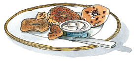
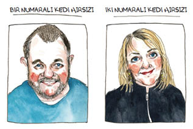
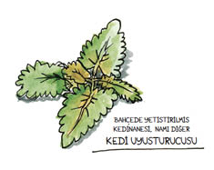

21

Kedi hırsızlarını çaya davet ettiğinizde, evi temizliyor, simitle krem peynir alıyor ve yalanlarını nasıl yakalayacağınızı planlamaya çalışıyorsunuz. Gerçeği, uyuşturucuları şıp diye ortaya çıkaran testler gibi ortaya çıkarıverecek sorulardan oluşan bir liste hazırlıyorsunuz.
1. Tibby’yi kucaklayıp evinize götürerek onu beş hafta boyunca orada kilit altında tuttuğunuzda, neden üstünde isim, adres ve telefon numarası yazılı bir tasma taktığını merak etmiş miydiniz?
2. Titreyen, çatlayan bir kadın sesinin her gece tasmada yazılı olan “Tibby” adını seslendiğini duyduğunuzda bir bağlantı olabileceği aklınıza geldi mi?
3. Tibby üzgün, içine kapanık ve evni özlemiş görünüp, sahibesini özlediğini belli ettiğinde:
a. Onun beynini mi yıkadınız?
b. Kederini unutsun diye onu abur cuburla
mı beslediniz?
c. Onu ve bütün gerçekleri görmezden mi
geldiniz?
d. Yukarıdakilerin hepsi.
Wendy bu soruların hiçbirini soramayacağımı söyledi.
“Terbiyeli davran,” dedi. “Henüz bir şey bilmiyoruz. GPS cihazı, kamera, hayvan iletişim eğitmeni, notlar, el ilanları ve hayvan dedektifleri konuştu. Komşularımıza da söz hakkı vermemizin zamanı gelmedi mi?”
Ben de mutlaka ele almak istediğim birkaç noktayı yazdım:
Evde çocuk var mı? (Medyumun kehanetine istinaden.)
Tibby’nin tasmasındaki adres ve isim okunabiliyor mu?
POSTA KUTUSUNA BIRAKILAN ÜÇ İLAN
Tibby’nin tasmasından sarkan çeşitli cisimler hakkındaki yorumlar?
Wendy listeme baktı ve bu konuların üzerinden geçmeyi kabul etti. Bana karışmamamı söyledi. Görüşmeyi kendisi yürütecekti.
Kedi Hırsızları çaya geldi. Gözlerimi kısarak süzdüm onları. İşte görünüşleri:

Evet, hoş insanlar gibi görünüyorlardı. Hatta hediye bile getirmişlerdi. Bol yapraklı bir kedinanesi dalı. Bahçelerinde yetiştiriyorlarmış.
Wendy memnun kalmıştı, ama ben aldanmamıştım. İnsanın bahçesinde kedinanesi yetiştirmesi, çocuklara şekerleme vermenin kedi muadili değil miydi? Evet, öyleydi.
Kedi Hırsızları, kanepede yatan ve onların geldiğini duyunca başını kaldıran Tibby’yi gördüklerine sevinmişlerdi. A-ha! İşte gerçek sınav buydu. Tibby’nin kedi beyni vızır vızır çalışıyor, bu ikisini nerede gördüğünü hatırlamaya çalışıyordu. Her şey yerli yerine oturunca, bir zamanlar onu rehin almış olan insanlardan kaçacaktı.
Kedim onu okşamalarına izin verdi. Bir Numaralı Kedi Hırsızı, yüzümdeki şok ifadesini görmüştü herhalde. “Kediler beni sever,” dedi. “Bir yere gidip otururum, etrafta kedi varsa mutlaka gelir beni bulur.”
Wendy yumuşak bir sesle, “Demek Tibby sizi buldu?” dedi, bir yandan da duyduğumdan emin olmak için bana bir bakış attı. Kedi Hırsızı değil bunlar diyordu bakışı. Kedilere Fısıldayan İnsanlar.
İşte hikayeleri:
Tibby geçen yaz bir gün çıkagelmişti. Sokak kedileri, Kedi Hırsızlarının her zaman dışarı bıraktıkları mamaları yiyinceye kadar çalılıkta beklemiş; ancak ondan sonra yanaşmıştı. Hayır, onu hiç eve almamışlardı, hatta okşamamışlardı. Tasmasında adres varsa bile, Tibby’ye yazıları okuyacak kadar yaklaşamamışlardı. Daha sonra çenesinin altındaki büyük mavi kutuyu fark etmişlerdi. Çocukları yoktu. Tibby’nin evden kaçmış ya da kayıp olduğunu anlamamışlar, oraya sadece bir şeyler atıştırmaya geldiğini düşünmüşlerdi.
Peki ya posta kutularına attığımız üç ilan?
İlanları hiç görmemişlerdi.
Hiçbirini mi?
Hiçbirini.
Kedi Hırsızları yardım etmeye istekli görünüyorlardı. Konuyu enine boyuna tartıştılar, sonra alt kattaki kiracının postadan gelenleri yukarı çıkarmadan önce ilanları attığına karar verdiler.
Gerçekten mi? Gerçekten mi? Bu kadar basit olabilir miydi? Ele avuca sığmayan kaçak bir kedi, okunamayan bir tasma, dikkatsiz bir kiracı?
Soru sormamam, hele de suçlayıcı soruları ağzıma bile almamam gerekiyordu ama kendimi tutamadım.
“Ee, peki evinize girmediyse nerede uyudu?” diye burnumu çektim. “Burada uyumadığı kesin.”
İki Numaralı Kedi Hırsızı, “Bana sorarsanız, bizimle yemek yedikten sonra yan tarafa geçiyordu,” dedi. “Orada terk edilmiş bir banya var.” Mahallenin eskiden Rus göçmenlerle dolu olduğunu anlattı. Onlardan kalan, otların arasına kaykılmış banya, yani Rus saunası yıkıntılarına hiç de az rastlanmıyordu.
Pek dinlemiyordum. Onun yerine kafamdaki bir listenin maddelerine çarpı atmakla meşguldüm. Beynimde uçuşan kağıdın bir tarafına “Deli” yazılmıştı. Diğer tarafınaysa “Aklı Başında.” “Deli” tarafındaki liste uzundu.

Sokak kedilerini besliyor
Arka bahçede kediler için uyuşturucu yetiştiriyor
Güvenilmez kiracıya ev kiralıyor
Bir Numaralı Kedi Hırsızı, “Herhalde banya’da uymuştur,” diye onayladı. “Bir sürü kedi oraya gider.”
Tibby, San Fransisco’daki bir saunada mı yaşamıştı yani? Bu kadarı da fazlaydı.
“Bir zamanlar on beş kediniz olduğunu duydum?” diye bağırıp Wendy’ye muzaffer bir bakış attım.
Bakışım, Deli kediciler, diyordu.
On beş kedi! diyordu.
Onlara güvenemeyiz, diyordu.
İki Numaralı Kedi Hırsızı hiç istifini bozmadan, “Ah, evet,” dedi.” “Arka bahçesinde koca bir kedi çetesi bulunan bir komşumuz vardı. Çok yaşlı bir kadındı, yalnızca Rusça konuşuyordu, yarı kördü ve tamamen sağırdı ve insanlardan fena halde ürküyordu. Yavruları bize getirmesi için onu ikna etmeye çalıştık. Aldığımız her yavruyla üç ya da dört hafta geçiriyor, oynuyor, ilgileniyor sonra da ona yuva buluyorduk. Bazen biri yeni yuvasına gittiğinde ağlıyordum. Herkese de, ‘Kedinizi artık istemiyorsanız bize getirin, barınağa bırakmayın,’ diyorduk.”
On beş kedi 
Kör münzeviyle ahbaplık
“Her kediye bir dosya tutardık. Bir keresinde yıl boyunca yirmi beş tanesine yuva bulduk,” diye ekledi Bir Numaralı Kedi Hırsızı.
Her kediye dosya
Karam, Tırtır, Nessie, Kibar, Elliot, Ponpon, Prenses, Chloe, Jones… Komşularımızın sahibi olduğu ya da sokakta baktığı kedilerin yalnızca birkaç tanesiydi bunlar. Eskiden, bir romandaki karakterden esinlenerek Efendimiz Brandoch Daha adı verilmiş olan, çok sevgili bir kedileri varmış. Bir Numaralı Kedi Hırsızı hatırayı düşünürken duraklayarak, “O da etrafta dolanırdı,” dedi. “Arka bahçeye çıkıp onu çağırırdım. Bazıları şu acayip Hristiyanlardan biri olduğumu zannederdi. Düşünsenize, orada durmuş gökyüzüne doğru ‘Efendimiz! Efendimiz!’ diye bağırıyorum.”
Artık evlerinde o kadar çok kedi yoktu. Şimdi yalnızca tek bir kedileri vardı; kocaman, yumuşak başlı bir Maine coon. Ama arka bahçelerinde hâlâ mama bulunduruyorlardı, çünkü çok fazla sokak hayvanı ve kötü muameleye maruz kalan hayvan vardı.
Sokak hayvanlarıyla kötü muamele görenlerden bahsedilince hissettiğim sızıya aldırmadım.
“Nasıl mama?” diye sordum. Uyuşturucu katılmış cinsinden mi?
“Friskies marka.”
“Ya? Friskies demek?” dedim ve Wendy’ye kaşlarımı kaldırdım. Bu hareketim, “Friskies kediler için Cadılar Bayramı şekerlemesidir,” anlamına geliyordu.
Friskies
“Aklı Başında” sayfası şüphe uyandıracak derecede boştu. İyice bakarsanız, küçücük harfleri seçebiliyordunuz:
Yavrulara yuva buluyor
Sokak hayvanlarına ve kötü muamele gören hayvanlara yiyecek veriyor
İhtiyar münzevilerle ilgileniyor
Bu listeye bakmayı reddediyordum. “Deli” sayfasına dönerek ekleme yaptım:
Bir yılda 25 kedi
Fazla zorladığımı biliyordum. Ama gücenmiştim. İşin aslı, Tibby’nin ortadan kaybolması için suçlayacak birilerini arıyordum. Kedime yetemediğim ve onun benden sır sakladığı gibi nahoş gerçekleri idrak etmenin yarattığı huzursuzluktan uzaklaşmam gerekiyordu. Tibby’nin hastalık derecesinde utangaç, ürkek ve ihtiyatlı bir kedi olduğunu sanmıştım. Oysa o yabancılarla ahbap olup saunalarda takılıyordu. “Deli” sayfasına yeteri kadar yüklenirsem, onun ortadan kaybolmasını bir anormallik addedip yok sayabilirdim. Parmağımı başımın yan tarafında döndürerek arkadaşlarıma, “Tabii ki çok mantıksızdı,” diyebilirdim. “Delilerde mantık ne arar?” Bu iş de böylece kapanırdı.
İki Numaralı Kedi Hırsızı, “Gelip arka bahçedeki mamalardan yiyen bir kedi var,” dedi. “Hatta bazen eve girip çişiyle işaret bırakıyor. Bir gün sahiplerine ona daha iyi bakmalarını ve bizimle temasa geçmelerini rica eden bir not yazıp tasmasına iliştirdim.”
“Tasmasına not mu iliştirdin?” Yüzümden kan çekilmişti.
“Evet, tabii,” dedi kadın.
İşte uyduruk hikayem o zaman çöktü. Alev alev yanan dargınlığım buhar olup uçtu. İnkar, sarhoş ve sızmış bir şekilde bir köşeye büzüldü. Kıskanç tarafım gidip bir battaniyenin altına kıvrılmayı kabul etti. Şüphe, sinsice şehirlerarası bir otobüse süzülmüş gidiyordu.
Sağduyumdan geriye kalmış küçük parça harekete geçti.
Kedi Hırsızları kedi hırsızı değildi. Kediseverdi onlar. Kediler için bir sürü çaba sarf ediyor, hatta tasmalarına not bile iliştiriyorlardı. Deli olsalar bile, bu normal, dürüst, çalışkan kediseverlik türünden bir delilikti.
Tasmalara not iliştiriyor
Tıpkı benim gibiydiler.
